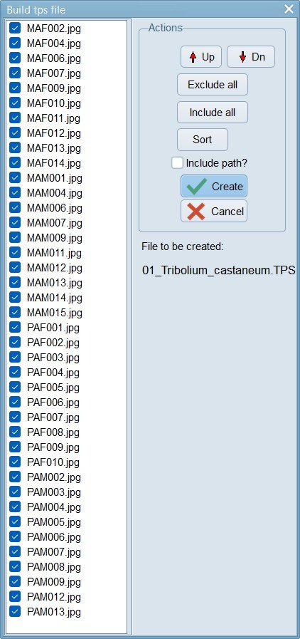
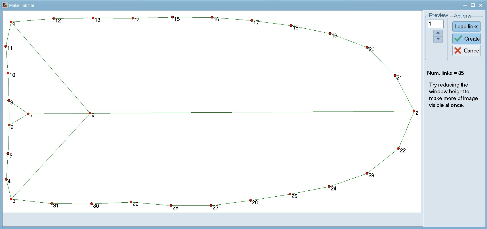
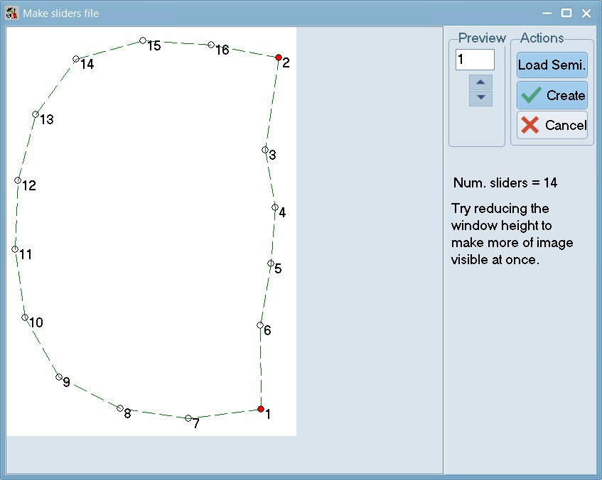

LM=number of landmarks
x1 y1
x2 y2
...
xn yn
ID=FB001
IMAGE=FB001.jpg
SCALE=scale factor
...
LM=number of landmarks
x1 y1
x2 y2
...
xn yn
ID=FB050
IMAGE=FB050.jpg
SCALE=scale factor
...
Outline (This tutorial is a work in progress)
Geometric morphometrics is a field of study that uses mathematical and statistical methods to analyze the shape and variation of biological forms. It is based on the use of landmarks, which are points that can be identified on each specimen and that correspond to homologous features. Geometric morphometrics can be applied to various biological questions, such as phylogeny, development, evolution, ecology, and function.
Prerequisites
- Windows 11 or similar OS (for digitisation using tpsDig)
- Download and install the tpsUtil and tpsDig
- Have R installed and be familiar with use of R
Learning objectives
Learning objectives
This introduction should allow you to:
- Understand the basic concepts and terminology of geometric morphometrics.
- Learn how to collect, digitize, and manage landmark data using software tools such as geomorph (R) and tpsDig (Windows).
- Learn to perform exploratory and confirmatory analyses of shape variation.
- Learn to visualize and interpret the results of shape analyses using graphical displays such as scatterplots, deformation grids, thin-plate splines.
- Gain the confidence to apply geometric morphometrics to appropriate examples in your field of study.
Introduction
Geomorph is a package for geometric morphometric analysis of two- and three-dimensional landmark data in R. It provides functions for data manipulation, shape alignment, multivariate statistics, visualization, and more. In this tutorial, we will use the Tribolium castaneum dataset, which contains landmark coordinates for elytra and pronotum, to demonstrate some of the basic functionalities of geomorph. For simplicity, we will use the tpsUtil and tpsDig programs and integrate them within this workflow. Users are welcome to utilise the digitisation process within geomorph, if they wish to do this (see section 5 of the GeoMorph manual).
This tutorial has been developed as a companion to [manuscript in prep].
Data preparation
Before we can use geomorph, we need to have our landmark data in a specific format called tps. A tps file is a plain text file that contains the coordinates of landmarks for one or more specimens, along with some optional metadata. A tps file has the following structure:
Each specimen is separated by a blank line, and each line starts with a keyword followed by an equal sign and a value. The keywords are case insensitive and can be in any order, except for LM, which must be the first line for each specimen. The LM keyword specifies the number of landmarks, followed by the x and y coordinates of each landmark in separate lines. The ID keyword specifies a unique identifier for the specimen, which can be a number or a string. The IMAGE keyword specifies the name of the image file that contains the specimen, which can be in any format supported by R. The SCALE keyword specifies a scale factor that converts the pixel coordinates to real-world units, such as millimeters or centimeters. Other keywords, such as COMMENT, CURVE, or POINT, can also be used to store additional information, but they are not required by geomorph.
Using tpsUtil and tpsDig
Download and install the tpsUtil32 and tpsDig2w64 software from the Stony Brook Morphometrics website. tpsUtil32 is a utility tool and tpsDig2w64 helps digitize coordinates of landmarks and capture outlines.
Download this zip file, and unzip it into a folder on your computer. Remember the name and location of this folder as you will need it in the next few steps. Open tpsUtil, select “Build tps file from images”, select the “input” directory where all your images are stored and then select the location and name for the “output file”. In this example, we have called the tps file – 01_Tribolium_castaneum.tps and saved it in the root of our data folder.
|  |
Click on the “Setup” button to see the list of files that were found in the folder you pointed towards. Exclude any files that should not need digitisation. Press create when ready. This will create a TPS file that we can use for landmarking all our images.
Randomise
Now, using tpsUtil, randomise the order of the files by selecting “randomly order specimens” from the Operations menu. This helps spread out any confounding factors (e.g. photos taken at different times of day / different lighting etc.). In this example, the 01_Tribolium_castaneum.tps file you created in the earlier step is used as the input. Load that file, hit create, and save the new file as 02_Tribolium_castaneum_randomised.tps. Please make sure you take a look at this file, within a text editor, and then adjust any file paths that need adjusting.

Let’s set some landmarks
Start the tpsDig program, open the 02_Tribolium_castaneum_randomised.tps file image you want to landmark images in, and then use the multi-point tool to set landmarks on this image. To make viewing easier, you can adjust the colour, size, and numbering of points under Options > Image Tools > Colors. Labels at width 35 look readable to me.

However, you may find a completely different setting, more useful for your set-up (e.g. due to display screen size, resolution etc.). I would suggest initially doing this for 5-10 files and finding a setting that you are comfortable with, before proceeding with a larger batch.
Use the landmark tool (accessed via in the top tool bar), to click on the points identified in numbers 1-17 in the image above. Pay careful attention to the order of the landmarks. If you choose to use a different order, you will need to change the link files accordingly.
After the initial landmarks have been sitiuated, use the background curve tool (accessed via in the top tool bar) to draw a multipoint line between landmark 1 and landmark 2. Usually, you need to just have a few well-spaced points that follow the outline of the shape you are measuring and one must start and end with a landmark.
Repeat this process to follow the curves between landmark 2-3 and then 12-13. Press the right mouse button, double-click, or click on the Edit mode button on the toolbar to start a new curve.
In edit mode, moving the cursor over the curve will select it and the number of points will be displayed on the status panel. If one right-clicks on the curve a context menu will be displayed that will allow one to: delete the entire curve, delete a selected point (if the cursor was on a curve point), resample the curve, switch back to digitize landmark mode, or just cancel the context menu.
Now, while hovering your mouse pointer over one of the blue lines, right-click on the image, select “Resample Curve” and enter 12 number of points.

When Resample is selected, then a window will be opened that displays the current number of points on the selected curve and allows one to specify a new number. If the “By steps” option is selected then the new number must be less than the existing number. Points will be deleted to achieve the desired number of points. Usually one will wish to use the “By length” option. With this option the new number of points can be less than, equal to, or larger than the existing number of points. The new points will be computed by linear interpolation along the curve. They will be approximately equally spaced (it is difficult to achieve exact equal spacing because deleting points changes the length of the curve when the curve changes shape as a result of the deletion of points). In both cases the minimum number of new points is two.
Repeat this step for each of the three lines. This will convert these curve points to landmark points for further processing. Note: other software may not recognize curve points as landmark points. The tpsUtil program has an option to append curve points as landmarks in order after any existing landmarks.
Now, before moving on to other images, select the template mode (a choice on the Options menu). This will copy the landmarks from the current specimen onto the next image as long as the next image does not have any landmarks already entered. You can then drag the landmarks to their appropriate locations to make landmarking more efficient. Note that the first landmark you move will translate the locations of all the landmarks. This does not necessarily need to be landmark number one, basically whichever you click on first and drag, decides the shifts associated with the other landmarks. Subsequent landmarks can be moved individually. This option helps minimize the chance of making the common error of digitizing the landmarks out of order.
Once the landmarks and curves have been digitized for the current specimen, click on the right arrow button or press ALT+N. Similarly, you can press ALT+P or the left arrow to go to the previous specimen
When you are done landmarking, save the file with a unique name and then open this file within tpsUtil to restore the original “Restore original order. This step will reorder the specimens in your TPS file back into their original order using the “OrigNum” keyword in the variables field. Our landmarked and order restored example is available as 03_Tribolium_castaneum_landmarked_original_order.TPS
Convert curve to landmarks:
Now, load the 03_Tribolium_castaneum_landmarked_original_order.TPS file within the tpsUtil program and use the option to append curve points as landmarks in order after any existing landmarks. Save this file as 04_Tribolium_castaneum_curves_removed.TPS
When opened in tpsDig, this file will appear like this - note that the blue lines are gone and they have been replaced by actual landmarks.
Delete extra landmarks:
Now, load the 04_Tribolium_castaneum_curves_removed.TPS file within the tpsUtil program and use the option to Delete/reorder landmarks. In this case, landmarks 1,18; 2,29,30; 3,41; 12,42; and 13,53 are overlapping with each other so we will delete the higher order landmarks in each of those sets.
This window lists the identification numbers of the landmarks in the input file. You can highlight one or more landmarks (holding down the shift or control keys while clicking with the mouse) and then using the buttons at the right to move the selected landmarks up or down in the list. Landmarks can also be excluded from the output file by unchecking them or by highlighting them with the mouse and then clicking on the “Exclude” button. You can include a landmark again by clicking on its checkbox or by selecting it and then clicking on the “Include” button. Click on the “Create” button to actually create the output file and then save the file as 05_Tribolium_castaneum_overlapping_lm_removed.TPS. Now, the TPS file is nearly ready to be analysed.
Set a scale:
Open the scale image within tpsDig, and zoom-in to a size that seems easy to work with. Click on the image tools icon and go to the Measure tab. To set a scale factor, enter the known length of a structure in the edit box and then digitize the two endpoints of the scale. Enter just the numerical value, do not enter the units. Press the OK button to accept the scale factor or the cancel button to ignore any changes you may have made in the scale factor. Make a note of this scale factor as we will be including it in all the .tps files that use this particular calibration image.
 |
|
 |
If your digital scale was included in the images you captured (e.g. an eyepice graticle or equivalent), then you can do the above “set scale” activity within your main .tps digitisation as well. In this case, all subsequent images you digitize will be assumed to have the same scale factor unless you explicitly give them their own scale factors. Using this feature causes the “SCALE=” keyword to be inserted in the output file.
Here, the value is: SCALE=0.002137. The scale factor is the entered length in user units divided by the measured length in pixels. It also scales the coordinates appropriately (by default the coordinates are in pixel units). The scale factor can also be recorded in the listing window. The scale factor is taken into account in the computation of image areas, perimeters, and linear distance measurements. It has no effect on the landmark coordinates – they remain in pixel units.
Split Pronotum & Elytra landmarks:
Now, load the 05_Tribolium_castaneum_overlapping_lm_removed.TPS file within the tpsUtil program and use the option to Delete/reorder landmarks. In this case, once we will delete all the elytra landmarks and save the output as 06_Tribolium_castaneum_pronotum.TPS and then repeat this process to delete the pronotum landmarks and save the output as 07_Tribolium_castaneum_elytra.TPS
Make a link file:
Within tpsUtil, select the “Make links file” option, select the 06_Tribolium_castaneum_pronotum.TPS file as an input (if trying this with a different file, note that at-least one image should be completely landmarked) and select an output destination for the link file as 06_Tribolium_castaneum_pronotum_links.TPS.
The locations of the landmarks on the first specimen in a TPS or NTS file will be displayed. With the mouse, one can draw links between any pairs of landmarks.

When drawing the program will display a “rubber band” line and will beep when you are sufficiently close to another landmark so that one can lift the left mouse button to end the current link. To delete the last link drawn, right-click on an unused portion of the background. To delete a specific link, right-click on it.
Press “Create File” when done.. keep this file safe - you will be needing it soon. Repeat this step for 07_Tribolium_castaneum_elytra.TPS to create 07_Tribolium_castaneum_elytra_links.TPS.
Make a sliders file:
This file defines how semi landmarks can be slide so as to minimize bending energy during a generalized Procrustes analysis (GPA) superimposition. The locations of the landmarks on the first specimen in a TPS or NTS file are displayed. With the mouse, one can draw links between any triplets of landmarks. The middle landmark of a triplet is then considered a semi landmark (it will be displayed using an open circle) and it will be allowed to slide in a direction parallel to the difference between the other two landmarks. Note: this program does not do the actual sliding. It is just used as a convenience to build the file that defines which points slide between which other points.
This image illustrates the sliders used for the pronotum (two fixed landmarks).
This image illustrates sliders used for the elytra and pronotum in another beetle species (note the 4 fixed landmarks for the pronotum and the 7 fixed landmarks for the elytra). Have a look at our sliders file here: pronotum_sliders.nts.

This file has to be entered into the tpsRelw program using the “Open sliders file …” menu option.
Guess what!
Phew, that’s most of the hard work done. Ideally, you would work through the rest of the tutorial within R. However, if you are having repeated Arrgh moments within R, you can…. open tpsRelw, Load the *.tps file you created with tpsDig and click through the Compute workflow: Consensus, Partial Warps, Relative Warps. The PCA plot can be found under the Display button “Relative Warps” and you can visualize shapes within the PCA morphospace, using the Camera tool and clicking on a point to visualize.
Expand To Learn About this step within Geomorph
If you want to do this step within geomorph, please follow these steps instead:
To create a tps file from a directory of image files, we can use the tps.write function from geomorph. This function takes a list of image file names, a matrix of landmark coordinates, and an optional list of specimen identifiers, and writes them to a tps file. The landmark coordinates can be obtained by manually digitizing the landmarks on the images using a software such as tpsDig, or by using an automated method such as the digitize2d function from geomorph. The specimen identifiers can be extracted from the image file names, or assigned by the user. For example, suppose we have a directory called data\images that contains a subset of 50 image files of Gnatocerus cornutus specimens, named FB001.JPG .. FB150.JPG. We can create a tps file called Gnatocerus_cornutus.tps with the following code:
if (!require(geomorph)) install.packages('geomorph')
if (!require(stringr)) install.packages('stringr')
if (!require(tidyverse)) install.packages('tidyverse')
# This line checks if the required packages is available.
# If not, it then proceeds to install that package.
# Load the geomorph package
library(geomorph, quietly=T)
# Set the working directory to the current folder
setwd("./")
# Get the list of image file names from the data/images folder
images <- list.files("./data/",pattern = "\\.jpg$", include.dirs = TRUE,recursive = TRUE, full.names = TRUE)
# Digitize the landmarks on the images using tpsDig or digitize2d
# For this example, we assume that we have a matrix of landmark coordinates called landmarks
# The matrix has 50 rows (one for each specimen) and 20 columns (two for each landmark)
# The landmarks are in the same order and position for all specimens
# Extract the specimen identifiers from the image file names
# We use the stringr package to remove the extension and the prefix
ids <- str_remove(images, "./data/full_body/")
ids1 <- str_remove(ids, "\\.jpg$")
ids2 <- str_remove(ids1, "PAM")
ids3 <- str_remove(ids2, "PAF")
ids3 <- str_remove(ids3, "MAM")
ids4 <- str_remove(ids3, "MAF")
# digitize2d(images, nlandmarks=10, scale = 1, tpsfile="./data/Tribolium_castaneum.tps",verbose = TRUE)
# Write the tps file
# writeland.tps(ids, file = "Tribolium_castaneum.tps")Data analysis
Once we have our tps file, we can use geomorph to read, plot, and analyze our landmark data. We can use the readland.tps function to read the tps file and store it in a list of two elements: a matrix of landmark coordinates and a vector of specimen identifiers. We can also use the plotTangentSpace function to plot the landmark data in a two-dimensional space that preserves the shape variation among the specimens. For example, we can read and plot the beetles data with the following code:
if (!require(geomorph)) install.packages('geomorph')
if (!require(stringr)) install.packages('stringr')
if (!require(tidyverse)) install.packages('tidyverse')
library(geomorph, quietly=T)
# Read the landmarks in
# specID - a character specifying whether to extract the specimen ID names from the ID or IMAGE lines
tribolium <- readland.tps("data/full_body/03_Tribolium_castaneum_landmarked_original_order.TPS", specID="ID")
36 curve points detected per specimen and are appended to fixed landmarks.# tribolium <- readland.tps("data/full_body/pronotum_slider.nts", readcurves = TRUE)
# The readcurves argument is set to TRUE because we have semilandmarks in our example
# Plot the landmark data in tangent space
# plot(tribolium)The plot shows the shape variation among the beetles specimens along the first two principal components of the Procrustes shape space. The Procrustes shape space is a mathematical space that represents the shapes of objects after removing the effects of translation, rotation, and scaling. The principal components are the directions of maximum variation in the shape space, and they can be interpreted as shape modes or shape factors. The plot also shows the mean shape of the specimens as a black dot, and the shape of each specimen as a blue dot connected to the mean shape by a line. The shape of each specimen can be visualized by hovering over the corresponding dot on the plot.
We can also use geomorph to perform various statistical analyses on our landmark data, such as testing for differences in shape among groups, testing for correlations between shape and other variables, testing for allometry or size-shape relationships, testing for phylogenetic signal or evolutionary patterns, and more. Geomorph provides a unified framework for these analyses, based on the generalized Procrustes analysis (GPA) and the Procrustes ANOVA. The GPA is a procedure that aligns the landmark coordinates of the specimens to a common orientation and scale, and calculates the Procrustes shape coordinates and the Procrustes distances. The Procrustes ANOVA is a method that partitions the shape variation among the specimens into different sources, such as group, size, or error, and tests for their significance using permutation tests.
For example, suppose we want to test if there is a difference in shape between male and female beetles, and if there is a correlation between shape and body length. We can use the procD.lm function from geomorph to perform these analyses. This function takes a formula that specifies the response variable (shape) and the explanatory variables (sex and length), and a data frame that contains the landmark data and the covariates. The function performs the GPA and the Procrustes ANOVA, and returns a list of results, such as the Procrustes sums of squares, the Procrustes mean squares, the F-statistics, the p-values, and the effect sizes. The function also plots the residuals of the shape variation against the covariates, and the shape changes associated with the covariates. For example, we can perform these analyses on the beetles data with the following code:
# Create a data frame with the landmark data and the covariates
# For this example, we assume that we have a vector of sex (M or F) and a vector of length (in mm) for each specimen
# beetles.data <- data.frame(beetles$coords, sex, length)
# Perform the shape analysis
# beetles.shape <- procD.lm(coords ~ sex + length, data = beetles.data)The output of the function shows that there is a significant difference in shape between male and female beetles (p < 0.001), and a significant correlation between shape and length (p < 0.001). The plots show that the shape variation is mostly explained by sex (PC1) and length (PC2), and that the shape changes involve changes in the head, the body, and the tail regions. The plots also show the mean shapes of the male and female beetles, and the shape changes associated with a unit increase in length.
Generalized Procrustes Analysis
Next, we need to perform a generalized Procrustes analysis (GPA) to align the landmark configurations and remove the effects of translation, rotation, and scaling. We can use the gpagen() function to do this, which returns a list containing the aligned coordinates, the consensus configuration, and the Procrustes distances.
# Y.gpa <- gpagen(plethspecies$land)Principal component analysis
One of the most common methods to explore shape variation is principal component analysis (PCA), which reduces the dimensionality of the shape data and identifies the main axes of variation. We can use the gm.prcomp() function to perform a PCA on the aligned coordinates, which returns an object of class gm.prcomp that contains the eigenvalues, eigenvectors, and scores of the PCA.
# PCA <- gm.prcomp(Y.gpa$coords)Shape deformation
To visualize the shape changes associated with the PCs, we can use the plotRefToTarget() function to produce deformation grids that compare the shapes corresponding to the extremes of a chosen PC axis. For example, to compare the shapes at the minimum and maximum scores of PC1, we can use the following code:
Summary
This tutorial has shown some of the basic functions of geomorph for geometric morphometric analysis of landmark data. There are many more functions and options available in geomorph, which you can explore by reading the documentation and the vignettes. Geomorph is a powerful and flexible package for studying shape variation and evolution in R.
Additional Resources
- Zelditch et al. 2012. Geometric Morphometrics for Biologists: A Primer, 2 nd Edition. Academic Press. This book is a thorough guide to the theory behind geometric morphometrics. It also has a companion site including data, scripts, and functions for R.
- Adams & Otárola-Castillo 2013. Methods in Ecology and Evolution 4(4): 393-399.
- Geomorph Google Group.
Acknowledgements
We did not create this content alone! Inspiration, tips, and resources have been borrowed from multiple sources.